Symmetry is a tool used to correctly identify nodes and the size of market moves. The size of a node’s move is called that node’s symmetry, and each node has its own symmetry rule. In the ideal case the symmetries of Nodes 1, 2 and 3 are equal, but because of uneven liquidity distribution this rarely happens. A proper understanding of symmetry helps a trader both forecast the approximate size of the next move and check whether the node count is correct. Below we look at the correct way to measure symmetries and the rules that govern them.
As already noted, in the ideal case the symmetries of all nodes are equal. Look at the schematic below:
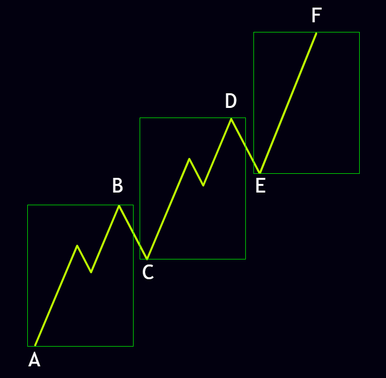
As the image shows, the three nodes that have formed are all the same size. Their symmetries are measured as follows:
AB = CD = EF
So once Node 1 is complete we can expect the market to move at least the distance from A to B in order to build Node 2. We then expect Node 3 to move the same distance as C to D. In other words, if the move from A to B (Node 1) is 500 points, the move from C to D (Node 2) and from E to F (Node 3) will also be 500 points. This ideal situation usually occurs only when liquidity is injected into the market in a very balanced way, which is rarely seen in financial markets.
In the more common case the symmetries of the nodes differ from one another. Several different patterns can appear, but the general rule is as follows:
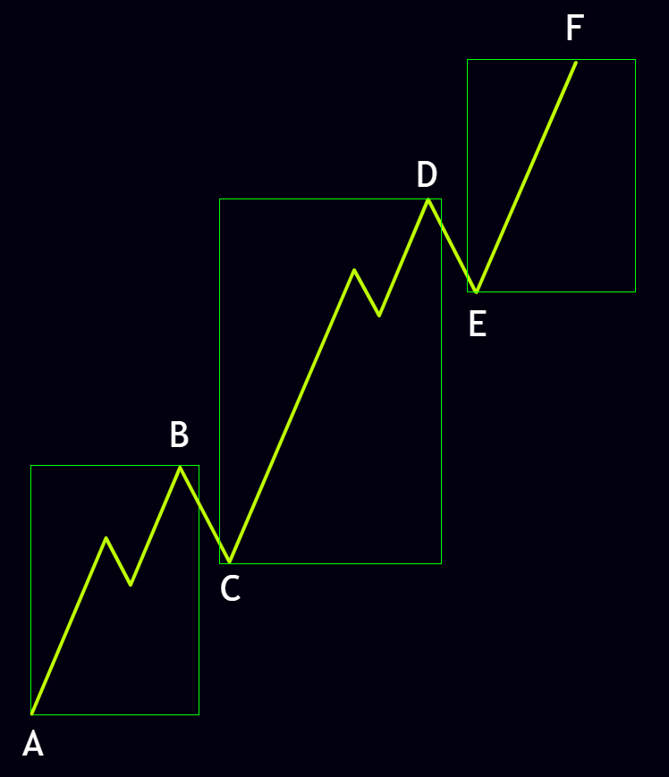
As can be seen in the image above, the three nodes that formed are not equal. Typically the symmetry of Node 1 is small, the symmetry of Node 2 is larger than Node 1, and the symmetry of Node 3 is roughly equal to that of Node 1 or Node 2. This pattern is one of the most common market behaviors; the enlargement of Node 2 allows us to conclude that the bullish or bearish trend is strong. Below we examine all the usual symmetry configurations of the nodes.
When Node 1 and Node 2 are equal, two possibilities can arise:
In this case the market, after two equal nodes, forms a shorter Node 3. This behavior often signals a weakening of trend strength and a possible change of direction.
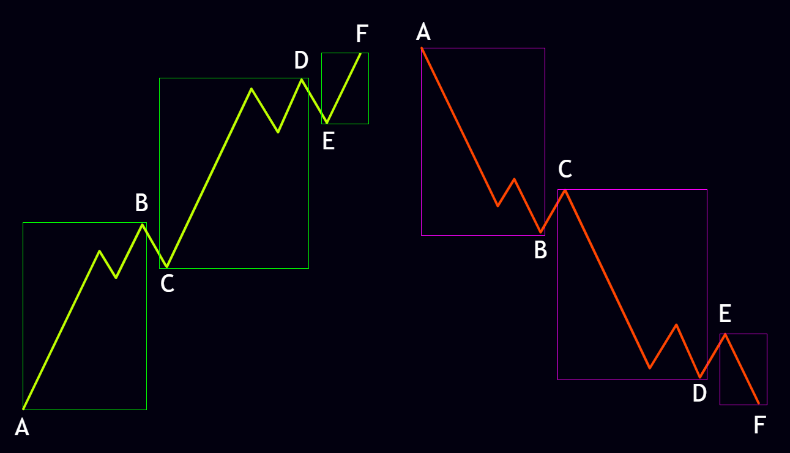
Here Node 3 appears stronger than the two preceding nodes. This pattern usually occurs when Node 3 has moved in order to resolve a Pending 1-2 on the left side of the market.
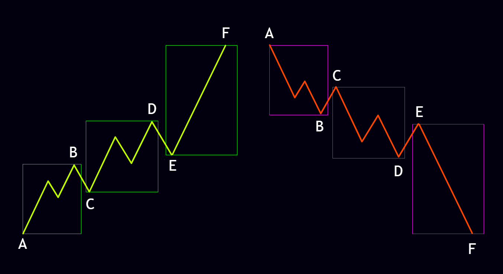
When Node 1 is smaller than Node 2, five possibilities can occur. These are the most common symmetry patterns in the market:
In this case Node 3 is the shortest move of the market and often indicates trend exhaustion and a possible change of direction.
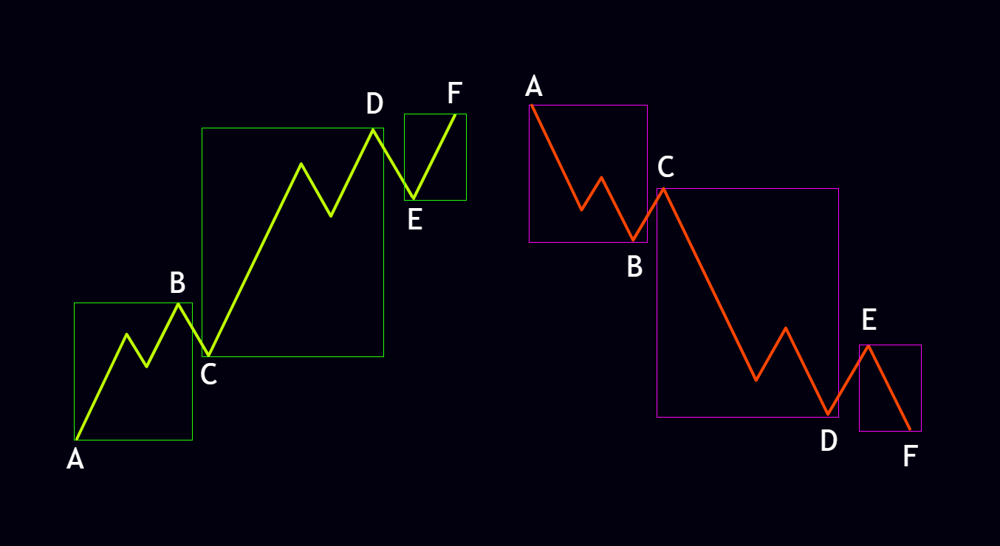
Here Node 3 is the strongest node and can be a sign that the market trend will continue.
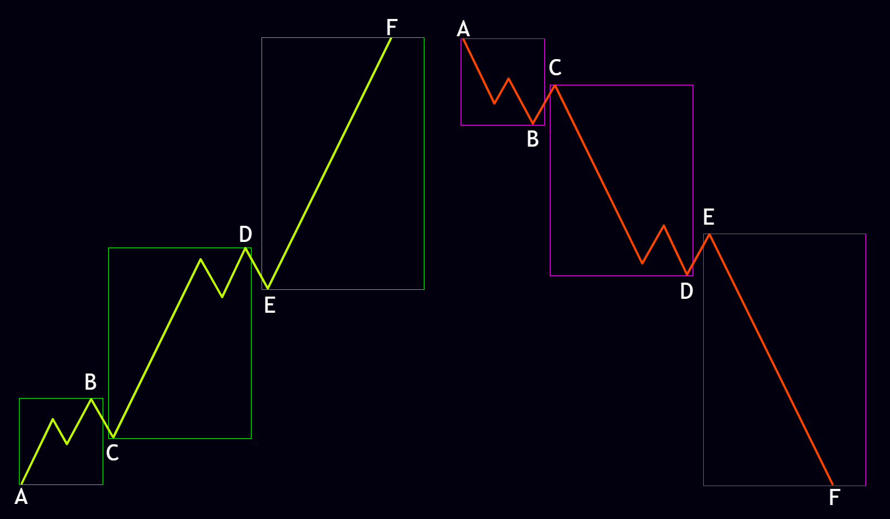
This configuration shows a relative balance and is one of the market’s more balanced patterns.
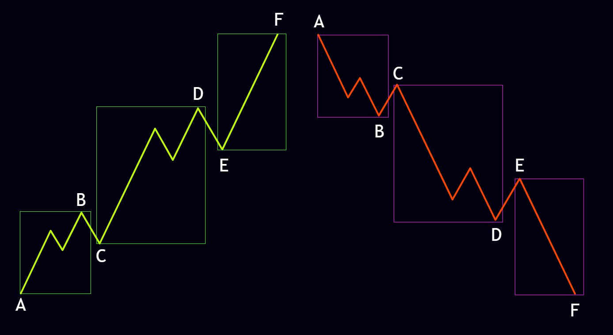
In this case Node 3 is roughly the same size as Node 2 and is often an important candidate for a market correction.
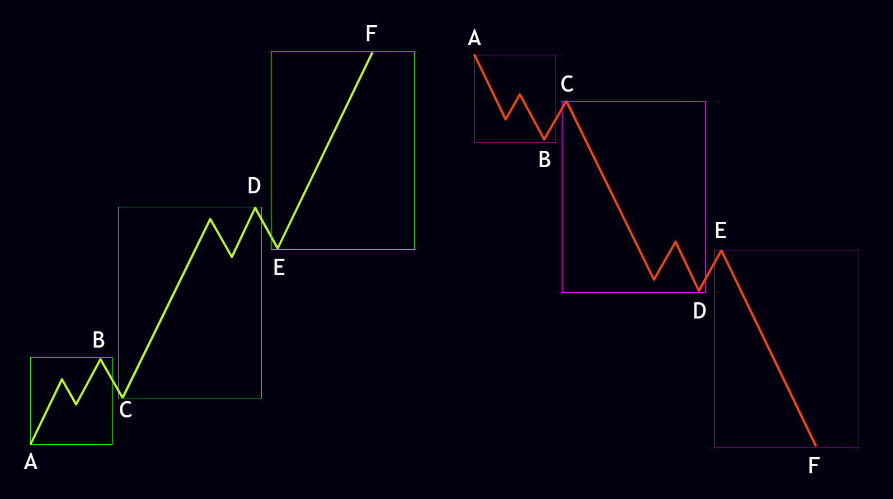
Here Node 3 is roughly the same size as Node 1; this configuration is also an important candidate for a market correction.
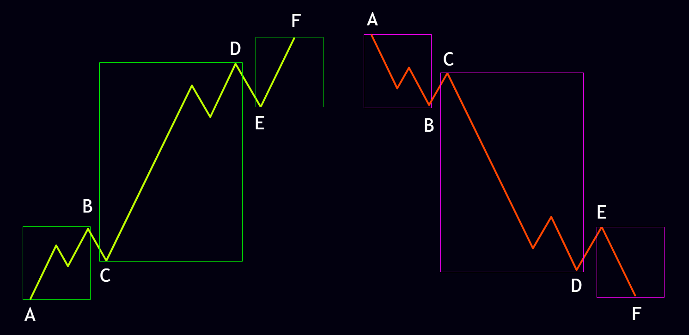
According to the fractal rules, symmetries are not limited to any particular time frame and follow the same laws on every time frame. Consequently the symmetries of the internal nodes must also obey the symmetry rules correctly. As can be seen in the shematic below, the internal nodes of the main Node 2 also follow the symmetry rules. This demonstrates the importance of the market’s fractal nature.
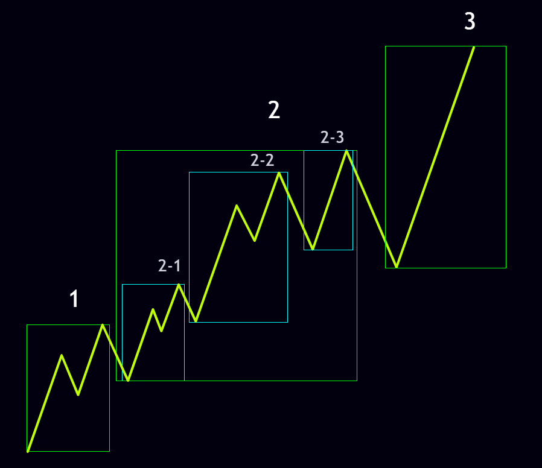
If the symmetry of Node 3 is much larger than that of Node 1 and Node 2, the node count is probably wrong or the market is still inside its trend and the nodes are not yet complete. The example below shows this situation. In the left-hand schematic the market appears to have completed three nodes, yet because Node 3 has grown excessively we can conclude that the market may turn into the right-hand schematic. In essence, Node 2 of the left-hand schematic was only the internal Node 1 of the main Node 2, and the enlargement of Node 3 on the left is justified as the formation of the internal Node 2 of the main Node 2.
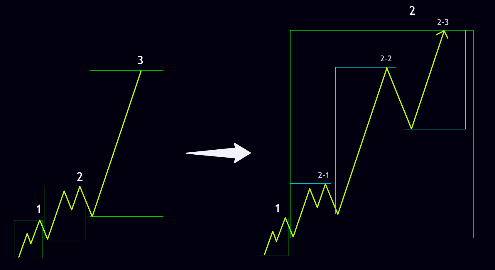
If the instrument is a trending market such as indices, precious commodities, cryptocurrencies or even stocks, higher time frames such as daily, weekly and monthly must be measured on a logarithmic scale so that the symmetries are accurate. The difference between logarithmic and normal scaling can be seen in the images below on the Bitcoin daily chart.
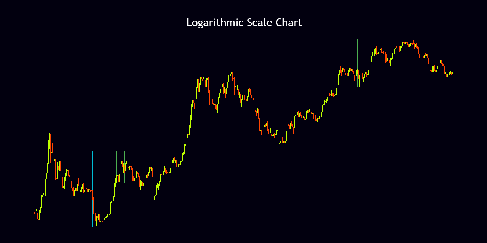
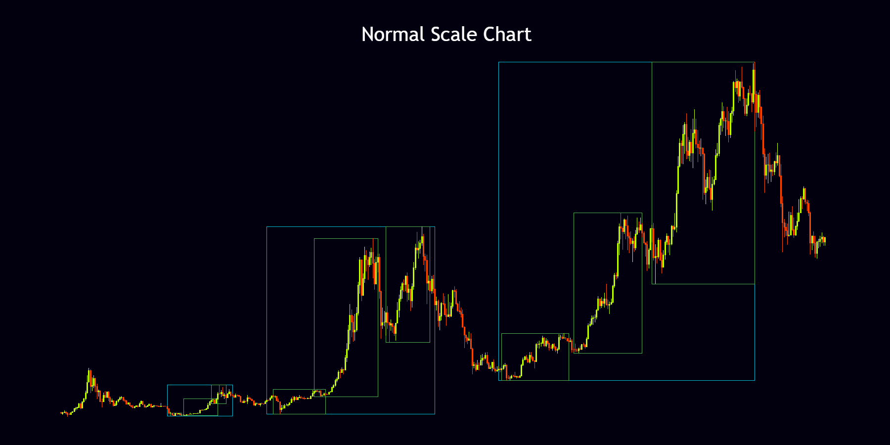
For range-bound instruments such as forex or any other market that moves inside a particular price range, the normal scale must be used. Choosing the correct scale is one of the key points for accurate symmetry measurement; ignoring it can lead to errors in measuring the nodes.
Time Symmetry is usually used to calculate the length of the period required to complete cycles. Once a cycle is finished, the time it took can serve as a rough basis for the time needed to complete the next cycle. In the schematic below it can be seen that the first cycle completed after 15160 candles and the following cycle took roughly the same amount of time to finish.
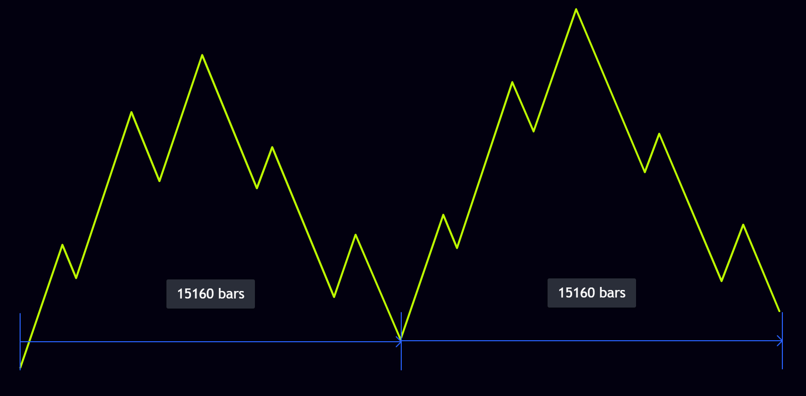
Note that because of the uneven distribution of liquidity in the market, Time Symmetry can be violated; only node symmetries are never violated. Time Symmetry therefore has mainly a supportive and approximate role and should not be used on its own as the basis for decisions.
Internodal Symmetry refers to the symmetry between the turning points of each node; this type of symmetry is most often seen in Node 2. As the schematic below shows, Internodal Symmetry on the left side is taken from the Retrace high of Node 2 to its Spike high and indicates the probable high of Node 3. In the correction on the right side of the market, Internodal Symmetry is taken from the Retrace low to the Flush low of the left-side Node 2 and indicates the probable low of the corrective Node 1 or 2 of the decline.
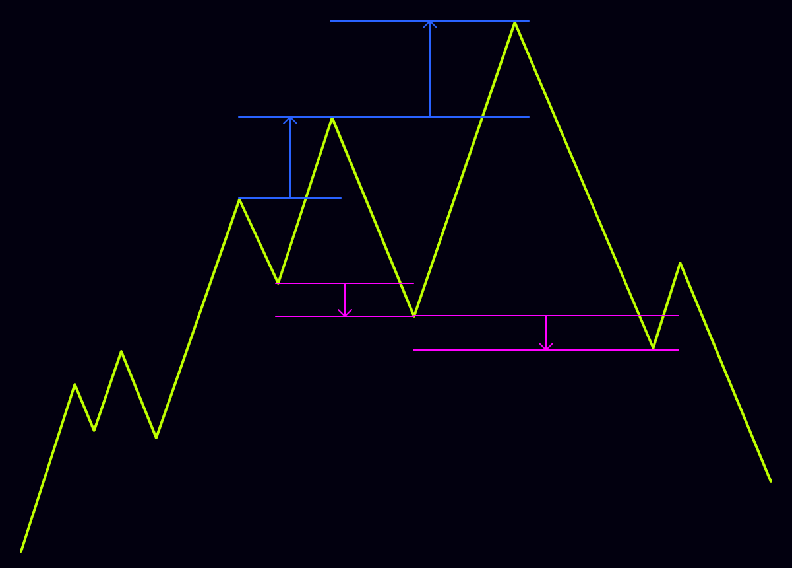
Note that, like Time Symmetry, Internodal Symmetry can also be violated because of uneven liquidity distribution; this type of symmetry likewise has only a supportive and approximate role and should not be used alone as the basis for decisions.
Node 3s that form as a 1-2-3 spike at the end of trends usually respect Internodal Symmetry. This pattern is very common at the end of strong trends and can be a sign that the market move is finishing and a correction or change of direction is beginning.
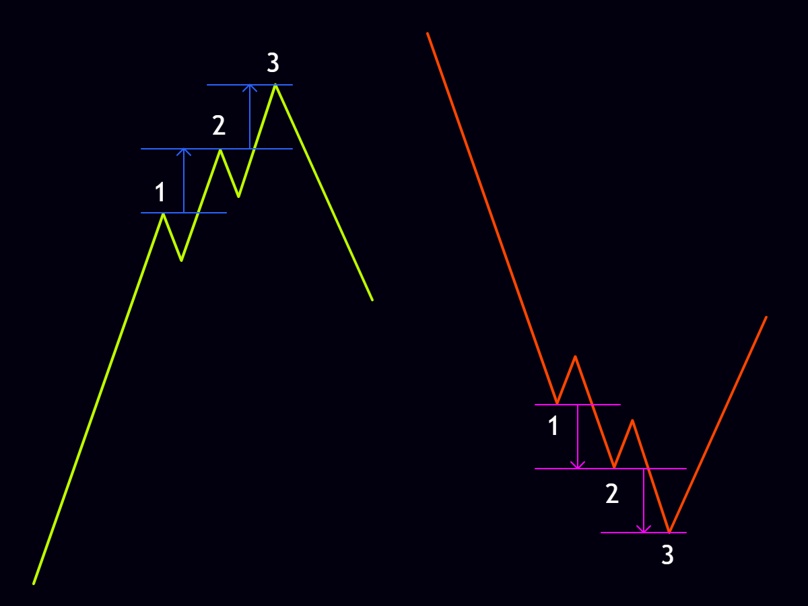
Overall, symmetry is one of the powerful tools of the N2N strategy that, together with nodes, cycles, sequence and fractals, gives the trader a more complete picture of market behavior. Correct measurement of symmetries, choice of the appropriate scale, and attention to the different types of symmetry can noticeably increase analytical precision and lead to more rational decisions.